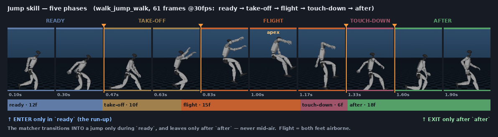

1 · Source data
The locomotion is the three GenoView
subject5 clips — walk, run, pushAndStumble — retargeted to the G1 with
GMR (General Motion Retargeting). GMR targets a 29-DOF G1
whose joint order is identical to our menagerie model, so the data maps straight to our qpos (verified by render). Each
clip uses GenoView's exact per-clip window (walk 160–15518, run 172–14136, pushAndStumble 397–706 at 60 fps,
÷2 for our 30 fps), and is added twice — once normal, once L/R-mirrored (GenoView-style). The jump
skill is the separate CAMDM walk→jump→walk clips.
walk — walk1_subject5 GMR
~256 s walk (≤1.5 m/s). The slow end of the speed-controlled gait.
run — run1_subject5 GMR
~233 s run (up to ~3.75 m/s, real airborne flight phase). The fast end of the gait.
pushAndStumble — pushAndStumble1_subject5 GMR
GenoView's short window is an in-place stumble / balance recovery (~5 s, no travel) — perturbation/recovery poses rather than a traveling gait.
jump — walk_jump_walk (walk → jump → walk)
Short, nearly straight clips that walk, jump, and keep walking. Used for the jump skill.
2 · Speed-driven gait — walk · run · jump
A single speed command ramps the desired pace; the matcher picks walk frames at low speed and run frames at high speed (the trajectory feature encodes the commanded pace), with no state machine — the gait is chosen by the data. A trigger near the end performs a jump.
MM walk → run → walk → jump
HUD shows the live source clip: walk1_subject5 at a stroll, run1_subject5
once commanded fast, then the jump clip on the trigger. Transitions are inertialized (no cross-fade); the world
root is integrated from the matched clip's smooth velocity.
3 · Experiment 1 — follow a square path
Path (0,0)→(6,0)→(6,6)→(0,6)→(0,0)→(6,0) (a 6×6 m loop, last edge re-traced). The matcher is
steered toward each corner (a go-to-point heading fed to the controller); it has no planner, so it follows the
path rather than planning to it.
MM reactive, steered
Traces the square but rounds the corners (LAFAN1 walk/run has no sharp turns, ~5 m turn radius). The controller responds to the commanded heading frame-by-frame.
4 · Experiment 2 — same path, jump over a box at (3,0)
A box sits at (3,0), which the path crosses twice, so the robot must jump over the same box
twice. The matcher reactively triggers a jump when the box is ahead (heading-aligned) and within one jump's
forward reach (so the apex lands on the box).
MM reactive jump trigger
Both jumps land near the box (~0.1–0.2 m): the controller steers and re-acquires the box well. With no look-ahead the second pass is best-effort and can drift — a reactive matcher follows, it doesn't plan to a fixed point.
5 · Method
A faithful port of GenoView's genoview_g1.py (reference: ~/Projects/motionmatching-g1),
real-time and reactive (step(speed, heading) each frame; an offline generate() wraps it for
rendering).
Pipeline
- Simulation root: per clip, a Savitzky–Golay-smoothed ground position + facing that the matcher tracks; the pelvis is stored as a local offset of it. The database is also L/R mirrored (each clip added twice).
- Feature (27-D, sim-root-local): foot positions (6) + foot & pelvis velocities (9) + future sim-root offset (6) and facing (6) at {10,20,30} frames; normalized by a per-block std.
- Search: every 0.15 s, query =
[current pose | desired trajectory]; nearest neighbour over per-clip KD-trees (each clip's last 30 frames trimmed from the search so a full future always exists), biased toward staying in the current clip. Jump frames are excluded — a jump happens only on a trigger. The desired trajectory half of that query is exactly the red gizmo drawn in every clip above (GenoView'sDrawTrajectory): you see what the matcher is searching for. - Transitions = inertialization: on a switch the pose discontinuity (joints + pelvis-local pos/rot and their velocities) is captured as a decaying-spring offset and bled to zero over ~0.075 s — no cross-fade, momentum preserved. The desired trajectory is predicted with critically-damped springs; the world root is integrated from the matched clip's smooth velocity.
Jump skill — five phases
Flight = both feet airborne; we carve five phases around it. A jump is entered only in ready
(the run-up) and exited only after after (recovery) — never mid-air — which also keeps locomotion
from ever matching into a jump. The strip below is a real walk_jump_walk clip (one frame from each phase,
left→right); orange ticks mark each phase transition.

The matcher cuts into a jump only during ready and leaves only after
after. The reactive box trigger fires when the box is within the jump's entry→apex forward travel, so
the apex lands on it.
Heuristics
- Box size: per jump, a box centred under the apex; height = foot clearance over its footprint × 0.92 (feet clear it). Half-extents (0.13, 0.28, ≤0.12) m — the data are low hops, so boxes are low.
- Foot-lock + de-jitter (post-process): Savitzky–Golay smoothing of root x,y (z kept so jump peaks survive), then foot-lock IK pins the two lowest sole spheres during steady stance (damped least squares on the 6 leg joints).
- Turning: LAFAN1 walk/run → ~5 m turn radius, so square corners are rounded (no sharp turns in the data).
Hyperparameters
| name | value | name | value |
|---|---|---|---|
| FPS | 30 | trajectory horizons | 10/20/30 frames |
| search time / current bias | 0.15 s / 0.01 | approx-NN eps | 0.01 |
| inert / vel / rot half-life | 0.075 / 0.2 / 0.2 s | sim-root smooth (pos/dir) | 15 / 31 |
| search-tail (per clip) | 30 frames | mirror / max speed | L+R / 5 m/s |
| phase ready/take-off/touch/after | 12 / 10 / 6 / 18 | flight foot threshold | 0.13 m |
| box half (x,y) | 0.13, 0.28 m | root smooth window | 9 |
Generated from the motiongraph repo (mm-only branch).
Full methods reference: PAPER.md; reproduce with run_experiments.py /
run_locomotion.py.